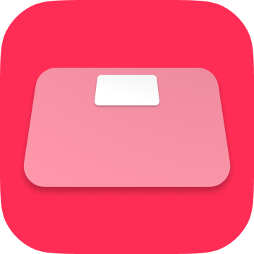
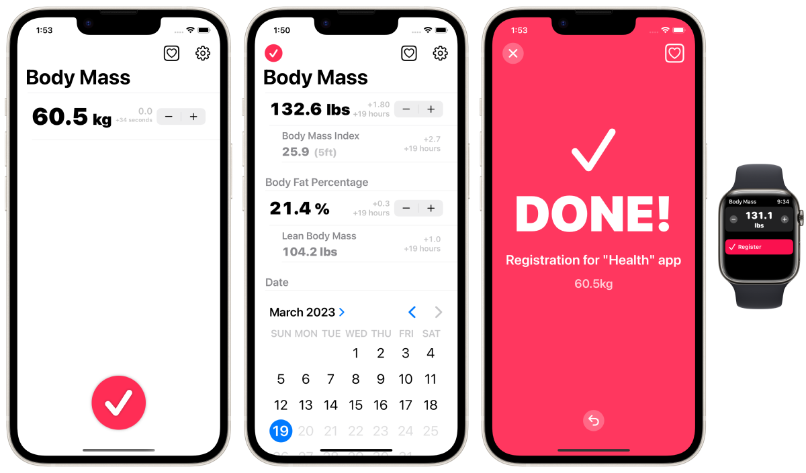

Зарегистрируйте данные о своем весе в приложении Health Care как можно быстрее.




Это самый быстрый (ручной) способ регистрации данных о весе в приложении Apple "Health Care", предустановленном на iPhone.
Предполагаемые пользователи / сценарии использования
Не имеют "умных" весов.
Ежедневно измеряют свой вес и процент жира в организме на весах.
Рассматривают возможность ручной регистрации результатов измерений в приложении 'Healthcare' сразу после каждого измерения на весах.
Вариант.
ИМТ может быть автоматически рассчитан и зарегистрирован одновременно.
Одновременно можно зарегистрировать процент жира в организме.
Масса тела (LBM) может быть автоматически рассчитана и зарегистрирована одновременно.
Единица измерения может быть изменена со 100 г на 50 г.
Совместимость с Apple Watch.
Функция уведомления о напоминании.
Возможность изменения даты и времени регистрации.
Возможность скрыть рекламные баннеры. (Покупка приложения)
Единицы измерения: кг, фунты, ст.
Прочее.
Запуск приложения Apple Health Care одним касанием из приложения.
Регистрация может быть отменена сразу после регистрации.
Концепция.
Люди часто ежедневно измеряют свой вес и процент жира в организме с помощью весов. Многие пользователи iPhone регистрируют данные о своем весе и проценте жира в приложении "Здравоохранение". Лучшее решение - использовать умные весы, которые работают с приложением Health Care и автоматически сохраняют результаты измерений, но они могут быть дорогими и недоступными. Хотя можно вручную регистрировать данные в приложении Health Care, к сожалению, приложение Health Care не предназначено для регулярной ручной регистрации данных измерений. Поэтому ручной ввод данных, которые происходят постоянно на ежедневной основе, например, измерение веса, может отнимать много времени и вызывать стресс. Это приложение было разработано для решения подобных проблем.
Это приложение не может читать, просматривать или управлять прошлыми данными в приложении 'Health Care'. Это приложение предназначено только для регистрации данных в приложении 'Health Care'. Пожалуйста, проверьте зарегистрированные данные в приложении 'Health Care'.
Бесплатно
Скрыть рекламу (160 йен)